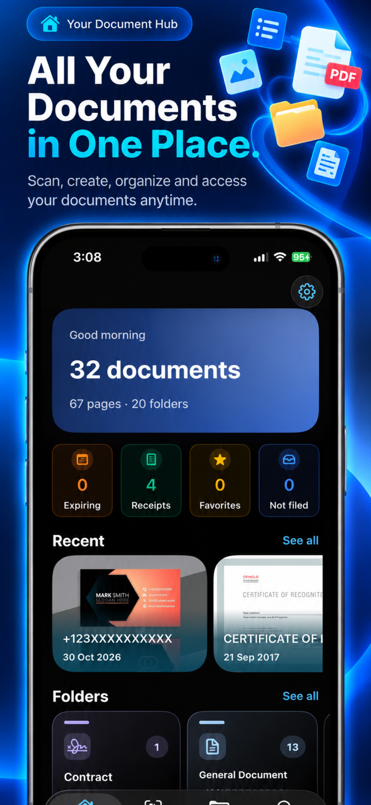
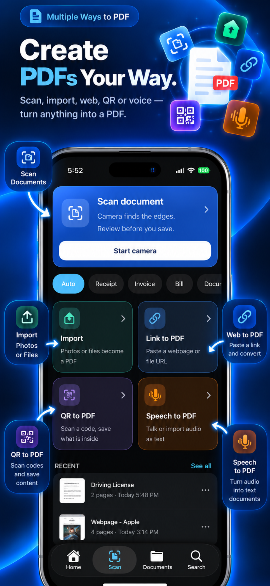
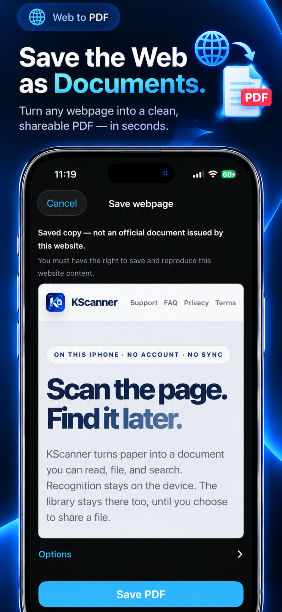
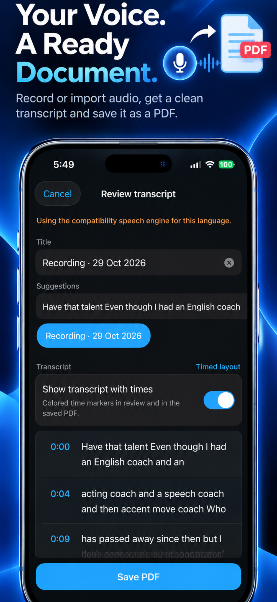
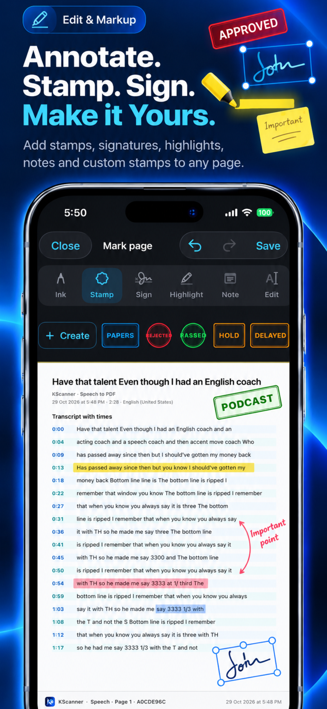
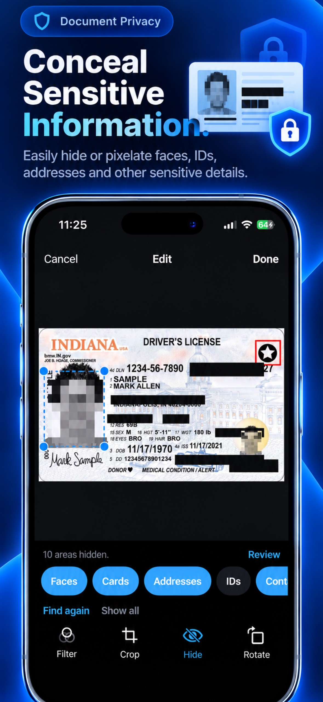
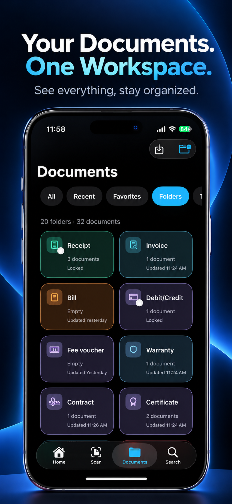

Scan
Capture one page or a stack. The camera finds the edges. Auto suggests a title and a type when it can.
KScanner turns paper, photos, links, QR codes, and speech into PDFs you can read, file, and search. Recognition stays on the device. The library stays there too, until you choose to share a file.

Capture one page or a stack. The camera finds the edges. Auto suggests a title and a type when it can.
Bring in photos or files from the library, Files, or Share to KScanner from another app.
Paste a webpage or file URL, preview it, and save your own copy as a PDF.
Scan a code and keep what is inside as a document in the library.
Record or import audio, review the transcript, and save a timed PDF.
Find pages by the words they contain. Share as PDF, Word, PowerPoint, Excel, JPEG, or text.






Keep documents in folders, mark favorites, and rename anything. Trash holds a file until you delete it for good.
Add ink, stamps, highlights, notes, and a signature. Hide faces or fields when you share a sensitive page.
Face ID, Touch ID, or your passcode can cover the app, a folder, or a single document.
Send a PDF, Word, PowerPoint, Excel, JPEG, or text file. A PDF password is optional, and it is not saved in the app.
Scanning, reading, and search run on the device. This version does not sync a library with iCloud. A copy leaves the device when you share a file, export a zip, fetch a link you pasted, or use Apple speech services when on-device recognition is unavailable.
Read the Privacy Policy →Scan a first page, save a link, turn speech into a PDF, export a backup, or write to support.
Visit KScanner Support →